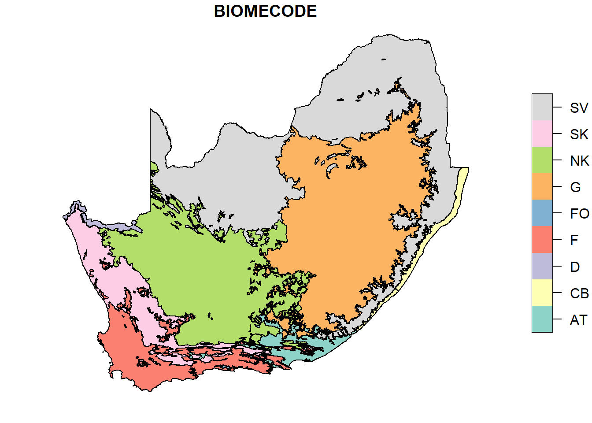
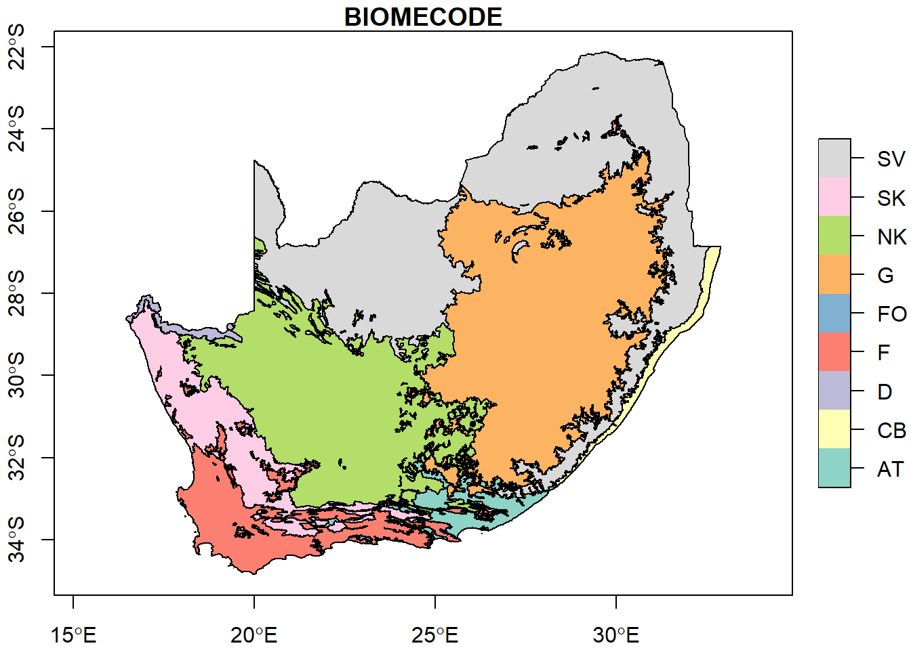
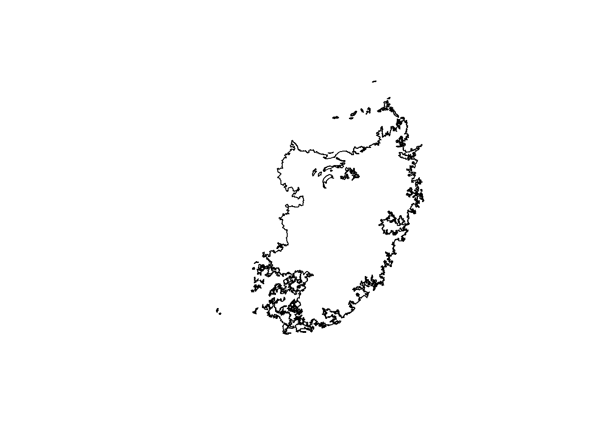
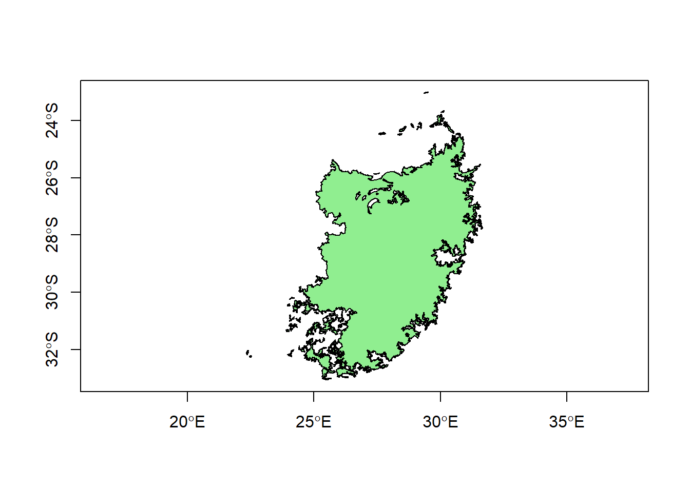

Part 3 Subsetting data
3.1 Adding more data
In this step, we’ll import some more slightly more interesting data: biomes in southern Africa.
#Import SABiomes.csv data
biomes<-st_read("SABiomes.shp")## Reading layer `SABiomes' from data source
## `C:\Users\bdav_\Dropbox\Teaching\Spatial R Short Course\Bookdown\Exercise1\SABiomes.shp'
## using driver `ESRI Shapefile'
## Simple feature collection with 287 features and 7 fields
## Geometry type: MULTIPOLYGON
## Dimension: XY
## Bounding box: xmin: 16.45696 ymin: -34.8334 xmax: 32.89179 ymax: -22.12917
## Geodetic CRS: WGS 84This dataset comes from the South Africa National Biodiversity Institute and is based on a 2006 classification scheme by Mucina and Rutherford.
You might notice that when you import this dataset, it reports the following:
Geometry type: MULTIPOLYGON
The “multi” types of geometry isn’t something we have seen yet, but you may be familiar with these if you have used other GIS platforms. The main difference between a POLYGON and MULTIPOLYGON geometry is that in a POLYGON geometry, each individual polygon is a distinct feature, while in a MULTIPOLYGON geometry, multiple polygons might be included in a single feature. You could think about it in terms of the main islands of Hawaii:

APOLYGON dataset might have separate features for Oahu, Maui, Kauai, and so on, while a MULTIPOLYGON dataset might have 8 polygons that are all a single feature called “Hawaii”. For the biomes dataset, some areas may include disconnected components, but are here considered to be a single feature or “multipolygon”.
Let’s use the unique function to take a look at how many different biomes are in this dataset:
#How many features are in this dataset?
unique(biomes$BIOMENAME)## [1] "Forests" "Grassland"
## [3] "Savanna" "Nama-Karoo"
## [5] "Desert" "Fynbos"
## [7] "Indian Ocean Coastal Belt" "Succulent Karoo"
## [9] "Albany Thicket"This shows us the names of all 9 of the primary biomes in South Africa. Now we can look at their distribution by plotting them. We probably don’t need to plot every variable, so let’s just use the BIOMECODE variable to plot by.
#Plot by biome code
plot(biomes['BIOMECODE'])
Lovely! We should also add axes.
#Plot by biome code with axes
plot(biomes['BIOMECODE'],axes=T)
3.2 Subsetting using attribute data
Now let’s say we’re only intrested in the grassland areas. We can use subset to reduce the dataset just to grassland areas.
#Plot just grasslands
grassland<-subset(biomes,BIOMENAME=="Grassland")
plot(st_geometry(grassland))
Again, let’s include the axes, and let’s also make the color light green.
#Print the grasslands green with axes
plot(st_geometry(grassland),axes=T,col="light green")
Looking good so far!
3.3 Try it yourself!
Modify the blank code chunk below to see if you can do the following with the biomes data:
- Subset the data so that it is just the savanna biome
- Plot this and choose a complementary color. If you’re not sure what the options are for colors, try this document.
- Change the type and thickness of the lines used to draw the features with the
ltyandlwdarguments. These take numeric values and default to 1. See what happens when you change these. - See if you can plot the geometry of the southern Africa, and then add the savanna.